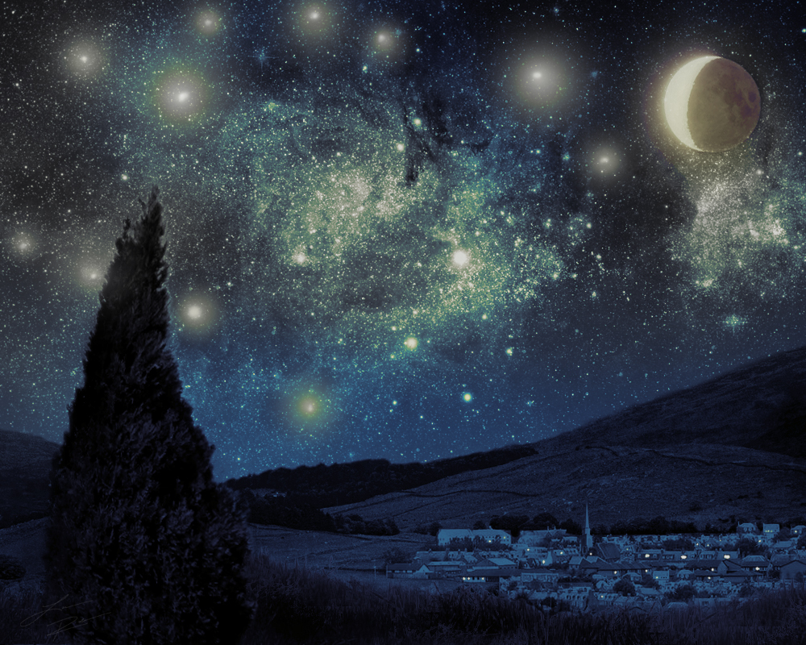
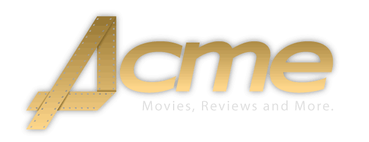
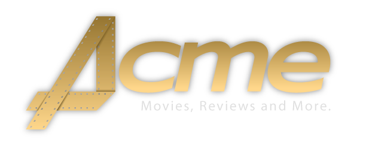

Here's a couple of things that I've done throughout the Web Design and Development program. Each one of these is my own work and is protected under the DMCA and a Creative Commons license. If you link to it, please give a link-back for creditation!

The Starry Night is a photomanipulated composition inspired by Vincent Van Goh's famous painting. It took a total of 1 hour and 58 minutes to create and has been compressed using a JPEG format.
This logo was for Advanced Design Tools and Interfaces for the Acme Movie Reviews project. The "A" is made to resemble a film strip to help give the logo a unique look-and-feel.

This is the 8-bit GIF version of the Acme Movie Reviews logo.

This is the 8-bit PNG version of the Acme Movie Reviews logo. Notice how there isn't much of a difference between the 8-bit GIF and the 8-bit PNG.

This is the 24-bit PNG version of the Acme Movie Reviews logo. This one is obviously much nicer than the other images.